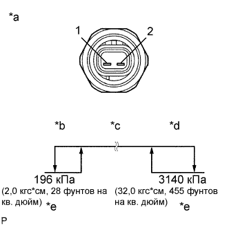
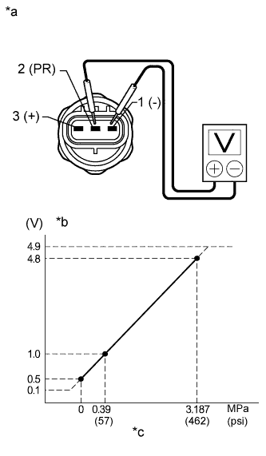

ДАТЧИК ДАВЛЕНИЯ СИСТЕМЫ КОНДИЦИОНИРОВАНИЯ > ПРОВЕРКА БЕЗ СНЯТИЯ С АВТОМОБИЛЯ |
| 1. ПРОВЕРЬТЕ КОНТАКТНЫЙ ДАТЧИК ДАВЛЕНИЯ СИСТЕМЫ КОНДИЦИОНИРОВАНИЯ (для моделей с одиночным кондиционером) |
|  |
Установите манометрический коллектор.
| *a | Устройство с неподсоединенным жгутом проводов (контактный датчик давления системы кондиционирования) |
| *b | Со стороны низкого давления: |
| *c | Включен (менее 1,0 Ом) |
| *d | Со стороны высокого давления: |
| *e | Выключен (10 кОм или более) |
Соедините положительный (+) вывод омметра с клеммой 1, а отрицательный (-) вывод – с клеммой 2.
Проверьте сопротивление между контактами при изменении давления хладагента, как показано на рисунке.
Если результат проверки не отвечает требованиям, замените контактный датчик давления системы кондиционирования.
| 2. ПРОВЕРЬТЕ КОНТАКТНЫЙ ДАТЧИК ДАВЛЕНИЯ СИСТЕМЫ КОНДИЦИОНИРОВАНИЯ (для моделей с двойным кондиционером) |
Установите манометрический коллектор.
Отсоедините разъем от контактного датчика давления системы кондиционирования.
|  |
Подсоедините положительный (+) вывод источника питания 5 В постоянного тока к контакту 3, а отрицательный (-) вывод – к контакту 1.
Подсоедините положительный (+) вывод вольтметра к контакту 2, а отрицательный (-) вывод – к контакту 1.
Измерьте напряжение в соответствии со значениями, приведенными в таблице.
| Контакты для подключения диагностического прибора | Состояние | Заданные условия |
| 2 (PR) - 1 (-) | Давление хладагента: 0,39-3,187 МПа (57-463 фунта на кв. дюйм) | 0,93 - 4,9 В |
| *a | Устройство с неподсоединенным жгутом проводов (контактный датчик давления системы кондиционирования) |
| *b | Напряжение |
| *c | Давление хладагента |